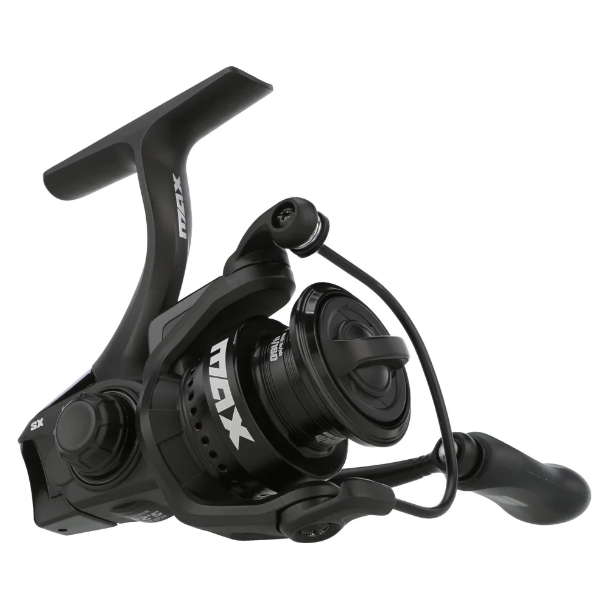

ReelCalc Reel Setup Guide
Abu Garcia Max SX Spinning 750 Line Capacity & Reel Setup Guide
The Abu Garcia Max SX Spinning 750 (MAXSXSP750) is a 750-size spinning reel suited to ultralight panfish, trout, and creek fishing. 6.1 oz, 21 inches of line pickup per handle turn, and 6.4 lb of published maximum drag define the working scale of this exact model. At 6.1 oz, it keeps trout and panfish outfits light in hand, while the 21-inch retrieve provides controlled line pickup.